<title>London Final Fixes</title>
<meta name="viewport" content="width=device-width, initial-scale=1">
<link rel="preconnect" href="https://fonts.googleapis.com">
<link rel="preconnect" href="https://fonts.gstatic.com" crossorigin>
<link href="https://fonts.googleapis.com/css2?family=Fraunces:opsz,wght@9..144,600;9..144,700&family=Source+Sans+3:wght@400;600;700&display=swap" rel="stylesheet">
<style>
  :root {
    --bone: #F4F1EA; --steel: #1F3A52; --brass: #C9A227;
    --bg: var(--bone); --card: #FFFFFF; --ink: #1B2733; --ink-2: #4A5866; --rule: #D9D3C6;
    --head: var(--steel); --chip-bg: #F3E7BD; --chip-ink: #5A4708; --ok: #2F6B3F; --warn: #9A3B21;
    --shot-bg: #ECE7DC;
  }
  @media (prefers-color-scheme: dark) {
    :root:not([data-theme="light"]) {
      --bg: #10161D; --card: #18222D; --ink: #E8E4DA; --ink-2: #A9B4BF; --rule: #2C3946;
      --head: #CFDDEA; --chip-bg: #3A3216; --chip-ink: #F0D77A; --ok: #8CCB9B; --warn: #F0A58C;
      --shot-bg: #0C1117;
    }
  }
  :root[data-theme="dark"] {
    --bg: #10161D; --card: #18222D; --ink: #E8E4DA; --ink-2: #A9B4BF; --rule: #2C3946;
    --head: #CFDDEA; --chip-bg: #3A3216; --chip-ink: #F0D77A; --ok: #8CCB9B; --warn: #F0A58C;
    --shot-bg: #0C1117;
  }
  * { box-sizing: border-box; }
  body { margin: 0; background: var(--bg); color: var(--ink); font: 17px/1.6 "Source Sans 3", system-ui, sans-serif; }
  main { max-width: 1120px; margin: 0 auto; padding: 32px 16px 64px; }
  h1, h2, h3 { font-family: "Fraunces", Georgia, serif; color: var(--head); line-height: 1.2; margin: 0; }
  h1 { font-size: clamp(28px, 5vw, 40px); }
  h2 { font-size: clamp(21px, 3.4vw, 26px); }
  h3 { font-size: 18px; margin-top: 20px; }
  p, li { max-width: 72ch; }
  .lede { color: var(--ink-2); margin: 10px 0 0; }
  .summary { margin: 24px 0 8px; display: grid; gap: 12px; grid-template-columns: repeat(auto-fit, minmax(220px, 1fr)); }
  .tile { background: var(--card); border: 1px solid var(--rule); border-radius: 12px; padding: 14px 16px; }
  .tile b { display: block; font-family: "Fraunces", Georgia, serif; color: var(--head); font-size: 18px; }
  .card { background: var(--card); border: 1px solid var(--rule); border-top: 4px solid var(--brass); border-radius: 14px; padding: 20px 16px; margin-top: 28px; }
  @media (min-width: 720px) { .card { padding: 28px 32px; } }
  .tag { display: inline-block; font-size: 13px; font-weight: 700; letter-spacing: .06em; text-transform: uppercase; color: var(--ink-2); margin-bottom: 6px; }
  .opts { list-style: none; padding: 0; margin: 12px 0 0; display: grid; gap: 10px; }
  .opts li { max-width: none; border: 1px solid var(--rule); border-radius: 10px; padding: 12px 14px; }
  .opts li.rec { border: 2px solid var(--brass); }
  .rec-chip { display: inline-block; margin-left: 6px; padding: 1px 8px; border-radius: 999px; background: var(--chip-bg); color: var(--chip-ink); font-size: 13px; font-weight: 700; }
  .who { font-size: 14px; font-weight: 700; color: var(--ink-2); }
  .pass { color: var(--ok); font-weight: 700; }
  .fail { color: var(--warn); font-weight: 700; }
  table { border-collapse: collapse; width: 100%; margin-top: 12px; font-size: 15px; }
  th, td { text-align: left; padding: 6px 8px; border-bottom: 1px solid var(--rule); vertical-align: top; }
  th { color: var(--ink-2); font-weight: 700; }
  @media (max-width: 639px) {
    table, thead, tbody, tr, td, th { display: block; }
    thead { position: absolute; left: -9999px; }
    tr { padding: 8px 0; border-bottom: 1px solid var(--rule); }
    td { border: 0; padding: 2px 0; }
    td[data-label]::before { content: attr(data-label) ": "; font-weight: 700; color: var(--ink-2); }
  }
  .shots { display: grid; gap: 14px; grid-template-columns: repeat(auto-fit, minmax(240px, 1fr)); margin-top: 16px; }
  figure { margin: 0; }
  figcaption { font-size: 14px; color: var(--ink-2); margin-top: 6px; }
  .frame { background: var(--shot-bg); border: 1px solid var(--rule); border-radius: 10px; max-height: 620px; overflow: auto; }
  .frame img { display: block; width: 100%; height: auto; }
  code { font-size: 14px; background: var(--shot-bg); padding: 1px 5px; border-radius: 4px; overflow-wrap: anywhere; }
  .done { border-top-color: var(--ok); }
</style>

<main>
  <span class="tag">London · /uk-locations/blue-staffy-puppies-london/ · 2026-10-04</span>
  <h1>London Final Fixes</h1>
  <p class="lede">Three open items: answers too tall for the height rule, two final-audit FAILs, and the primary keyword in the wrong image alt. Every number here was measured in a painting browser (Playwright) on a copy of the built page with all images loaded. Each card shows what a fix would look like; nothing on this page has been applied to the site unless the card says <b>Done</b>.</p>

  <div class="summary">
    <div class="tile"><b>Done (2 commits)</b>Phone infographics now reserve their box before they load (no layout jump), the height check reports an unreserved image instead of mis-measuring it, and the repeat Maggie photo's alt no longer carries the primary keyword.</div>
    <div class="tile"><b>Needs your pick (7)</b>Four layout choices for the tall answers, one width cap for phone infographics, and two wording choices for the audit FAILs.</div>
    <div class="tile"><b>Height caps</b>An answer may be at most 2,030px tall at 375, 2,250px at 640 and 1,280px at 1280 (2.5 or 1.6 screens, judged per answer, your ruling q10).</div>
  </div>

  <!-- ===================== DONE ===================== -->
  <section class="card done">
    <span class="tag">Done · no visible change</span>
    <h2>Phone infographics reserve their space before they load</h2>
    <p>On a phone, each of the six infographics showed as a 0px box until its picture arrived, then pushed the text below it down by 660 to 1,755px. Once the picture had loaded, the page looked the same as before. The height check had a matching blind spot: it measured an answer at whatever size happened to have loaded. The page now reserves each picture's exact height before it loads, and the check reports any image that holds no box. Before the fix the check flagged all 6; after it, 0.</p>
    <p class="who">Commit df470c9c · src/styles/board-styles.css, tests/render/lib/cityTypeFit.ts, tests/render/city-kit.spec.ts</p>
  </section>

  <section class="card done">
    <span class="tag">Done · alt text only</span>
    <h2>Primary keyword out of the repeat Maggie photo's alt</h2>
    <p>Rule 50b puts "blue staffy puppies london" in the primary (hero) image's alt <i>only</i>. The hero is the Maggie photo's first use, and working rule 11 says that first use keeps its served alt, so the keyword cannot go there. That leaves it in no alt. The repeat now uses the litter section's own variation keyword:</p>
    <p><b>Was:</b> Maggie, the dam behind our blue Staffy puppies London families meet on video, lying with her litter<br><b>Now:</b> Maggie, the dam behind our blue Staffie puppies that families meet on video, lying with her litter</p>
    <p class="who">Commit 7827d833 · recorded in verbatim.changed, re-approved citing rules/images.md · board gate 0 FAIL over 35 assets · new test: no alt but the hero's carries the primary keyword</p>
  </section>

  <!-- ===================== A1 ===================== -->
  <section class="card">
    <span class="tag">A1 · Height · 34px and 8px over</span>
    <h2>"Can I Watch the Puppy and Its Mother on a Live Video Call?"</h2>
    <p>2,064px at 375 (cap 2,030) and 1,288px at 1280 (cap 1,280). The bulk is the video-call checklist: two panes of four ticks, 1,041px tall at 375. Both overs are spacing.</p>
    <ul class="opts">
      <li class="rec"><b>W2: tighten the checklist's spacing</b><span class="rec-chip">Recommended</span><br>Tick rows 10px to 8px top and bottom, the list's inner padding 4/8px to 2/4px, the pane header 11px to 9px, and the gap under the checklist 24px to 16px. <span class="pass">2,012px at 375 and 1,262px at 1280, both under the cap.</span><br><b>Why:</b> it is the smallest change that clears both widths, and no word moves. <b>Trade-off:</b> only 18px of headroom at each width, so a longer tick line later could tip it back over.</li>
      <li><b>W1: tick rows and bottom gap only</b><br>1,272px at 1280 passes, but 2,032px at 375 is still 2px over. <span class="fail">Fails.</span></li>
    </ul>
    <div class="shots">
      <figure><div class="frame">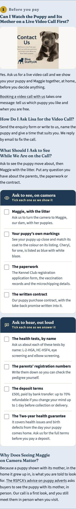</div><figcaption>375 · now · 2,064px</figcaption></figure>
      <figure><div class="frame">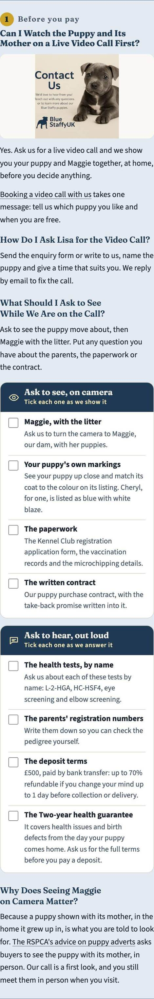</div><figcaption>375 · W2 · 2,012px</figcaption></figure>
      <figure><div class="frame"></div><figcaption>1280 · now · 1,288px</figcaption></figure>
      <figure><div class="frame">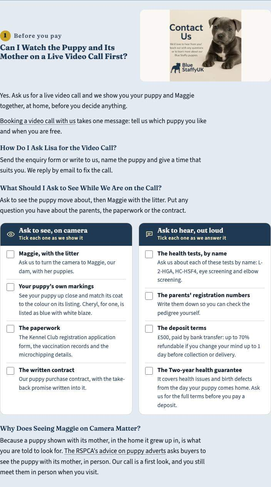</div><figcaption>1280 · W2 · 1,262px</figcaption></figure>
    </div>
  </section>

  <!-- ===================== A2 ===================== -->
  <section class="card">
    <span class="tag">A2 · Height · 592px over at 1280</span>
    <h2>"How Much Is Each Blue Staffy Puppy in This Litter?"</h2>
    <p>1,872px at 1280 (cap 1,280); 1,660px at 375, which passes. This answer is set "wide", so its photo spans the full 704px column (384px tall) instead of sitting beside the question like every other photo answer. It also holds the six-row price table (657px) and a second full-width photo (384px).</p>
    <ul class="opts">
      <li class="rec"><b>P6: lay it out like the other photo answers</b><span class="rec-chip">Recommended</span><br>(1) Drop "wide", so the photo sits beside the question. (2) From a desktop column, put the price photo beside its H4 question and paragraph; in the source it moves to just above its H4. (3) Price-table rows 12px to 8px top and bottom. <span class="pass">1,260px at 1280.</span> 375 is unchanged (1,660px); 640 drops to 1,431px.<br><b>Why:</b> the "wide" layout is meant for infographics, and this answer's lead image is a photo. Every other photo answer already sits at 340px beside its question. <b>Trade-off:</b> the beside-the-text photo is a new layout inside an answer, so it needs your eye. Headroom is 20px.</li>
      <li><b>P1: drop "wide" only</b><br>1,618px. <span class="fail">Fails.</span> P1 plus the price photo beside its text, without the table change, gets 1,342px. <span class="fail">Fails.</span></li>
      <li><b>Content: move "Why Won't You Find a Cheap Blue Staffy Puppy on Our Page?" (with its photo) under "At a Glance"</b><br>About 1,340px on its own, so it still fails without P1; about 1,080px with P1. It changes the approved outline, so it is your call.</li>
    </ul>
    <div class="shots">
      <figure><div class="frame">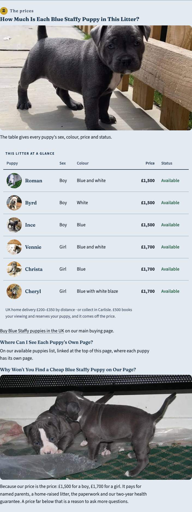</div><figcaption>1280 · now · 1,872px</figcaption></figure>
      <figure><div class="frame">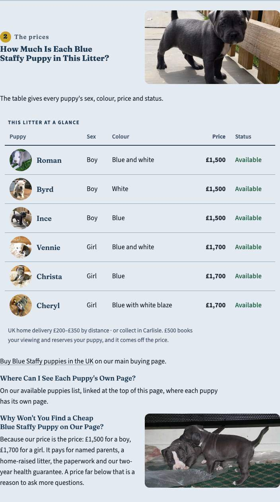</div><figcaption>1280 · P6 · 1,260px</figcaption></figure>
    </div>
  </section>

  <!-- ===================== A3 ===================== -->
  <section class="card">
    <span class="tag">A3 · Height · the biggest over</span>
    <h2>"How Do Staffies in London Cope With Stairs, Lifts and Neighbours in a Flat?"</h2>
    <p>3,753px at 375 (cap 2,030), 2,929px at 640 (cap 2,250), 2,570px at 1280 (cap 1,280). Almost all of it is the parks list: 10 parks under 4 publishers with 24 dog-rule facts, 3,074px at 375 and 2,082px at 1280. At 1280 it is already two cards across. The same list also fails on its own on the kit specimen page (2,773px at 375).</p>
    <ul class="opts">
      <li class="rec"><b>S1: one tap-to-open row per publisher</b><span class="rec-chip">Recommended</span><br>Each publisher becomes a closed row showing its name and how many places it covers ("The Royal Parks · 5 places +"). One tap opens its place cards, with every word and link kept. <span class="pass">1,001px at 375, 742px at 640, 786px at 1280.</span> It also fixes the specimen page.<br><b>Why:</b> it is the only layout change that clears the cap. Squeezing the cards without hiding them only gets 3,579 / 2,623 / 2,326px (S2 below). <b>Trade-off:</b> the dog rules sit behind a tap. A reader who opens the Royal Parks row gets a 2,201px answer, though by their own choice. The words stay in the page's HTML, but hidden text may count for less in search.</li>
      <li><b>S2: compact cards, nothing hidden</b><br>Source links on one line, tighter cards. 3,579 / 2,623 / 2,326px. <span class="fail">Fails at every width.</span></li>
      <li><b>Content: give the parks list its own H3</b><br>The list alone is about 3,370px at 375 and 2,380px at 1280 with a heading and photo, so this still needs S1. It is an outline change for you.</li>
    </ul>
    <div class="shots">
      <figure><div class="frame">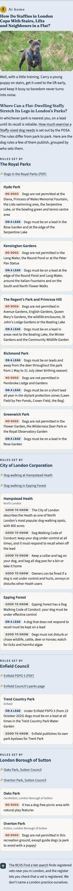</div><figcaption>375 · now · 3,753px</figcaption></figure>
      <figure><div class="frame">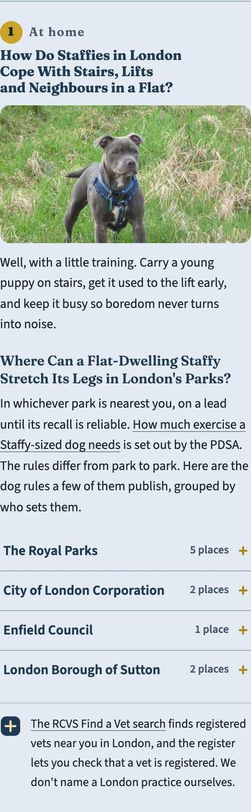</div><figcaption>375 · S1 closed · 1,001px</figcaption></figure>
      <figure><div class="frame">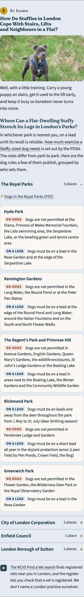</div><figcaption>375 · S1, Royal Parks opened · 2,201px</figcaption></figure>
      <figure><div class="frame">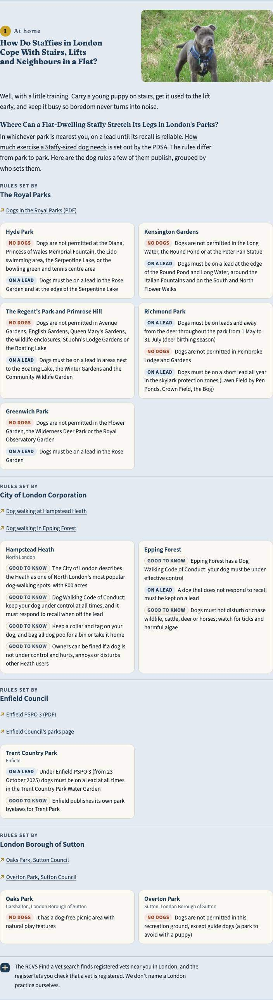</div><figcaption>1280 · now · 2,570px</figcaption></figure>
      <figure><div class="frame">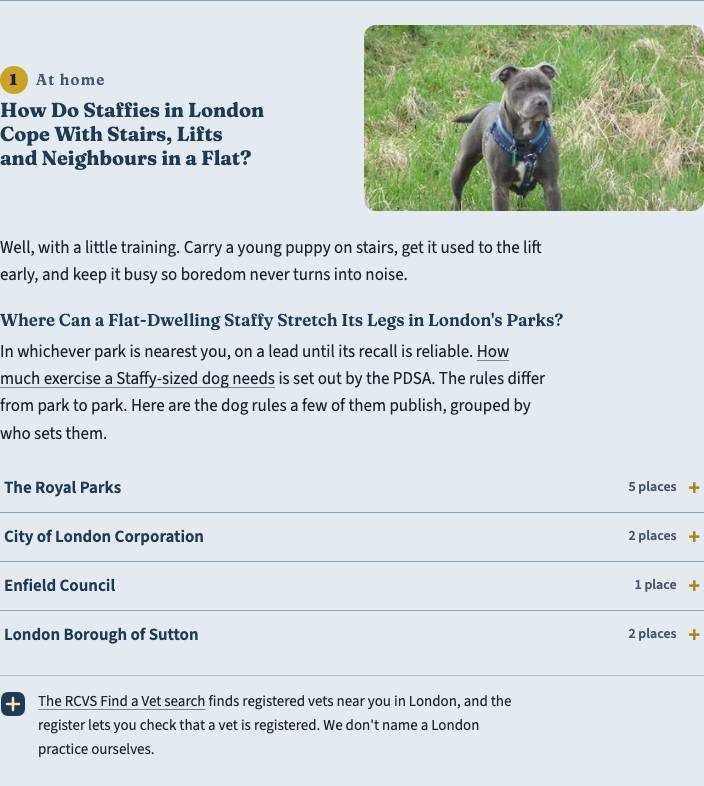</div><figcaption>1280 · S1 closed · 786px</figcaption></figure>
    </div>
  </section>

  <!-- ===================== A4 ===================== -->
  <section class="card">
    <span class="tag">A4 · Height · 222px over at 375</span>
    <h2>"Blue Staffordshire Bull Terrier or AmStaff: How Do Their Breed Standards Differ?"</h2>
    <p>2,252px at 375 (cap 2,030). The phone infographic alone is 1,755px. Its top 318px (out of 2,636 in the file) repeats this H3 word for word, directly under the H3 itself.</p>
    <ul class="opts">
      <li class="rec"><b>M1: crop the repeated title off the phone picture</b><span class="rec-chip">Recommended</span><br>A display crop of the approved file's top 360px (the repeated title and the gap under it) and bottom 30px (blank). The file is untouched and keeps its URL. <span class="pass">1,992px at 375.</span><br><b>Why:</b> it removes only words the reader has just read in the heading, needs no new image, and ships with the page. <b>Trade-off:</b> the crop depends on this file's layout, so a re-drawn file would need its numbers re-checked. 38px of headroom.</li>
      <li><b>M2: re-bake the phone file without its title band</b><br>The same effect with a new file beside the old one. It needs a bake and your approval of the exact bytes at the Asset Gate.</li>
      <li><b>Narrow the picture to 271px</b><br>That passes, but shrinks every label 13% below the size it was drawn for. Not advised.</li>
    </ul>
    <div class="shots">
      <figure><div class="frame">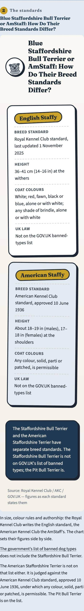</div><figcaption>375 · now · 2,252px</figcaption></figure>
      <figure><div class="frame">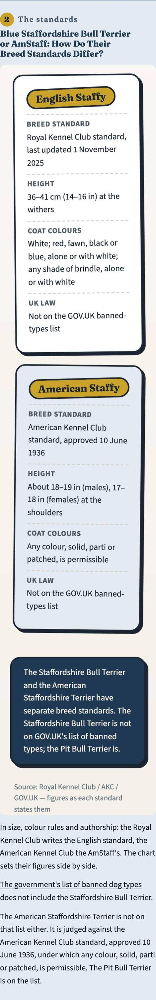</div><figcaption>375 · M1 · 1,992px</figcaption></figure>
    </div>
  </section>

  <!-- ===================== A5 ===================== -->
  <section class="card">
    <span class="tag">A5 · New finding · 431 to 639px wide</span>
    <h2>Phone infographics stretch on a wide phone or a small tablet</h2>
    <p>Each phone infographic is drawn for a 311px column, but it grows with the column up to 639px. At 600 the standards chart is 3,025px tall, and three answers break the cap: Four Steps 2,327px, the DNA checks 2,388px and AmStaff 3,399px (cap 2,250). No test width lands here (the suite paints 375 and then 640+), so this was never reported.</p>
    <ul class="opts">
      <li class="rec"><b>N360: hold phone infographics at 360px, centred</b><span class="rec-chip">Recommended</span><br>With M1, every infographic answer passes at 375, 414 and 600 (at 600 the DNA checks answer drops to 1,677px and AmStaff to 2,105px). 375 is unchanged.<br><b>Why:</b> the labels stay at the size they were drawn for instead of being blown up 1.7 times. <b>Trade-off:</b> at 600 the picture sits with bone ground either side of it in a 536px column.</li>
      <li><b>Leave it</b><br>Few readers browse between 431 and 639px wide (foldables, split screens), and no test width covers it.</li>
    </ul>
    <div class="shots">
      <figure><div class="frame">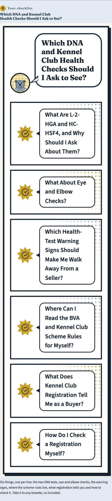</div><figcaption>600 · now · 2,388px</figcaption></figure>
      <figure><div class="frame">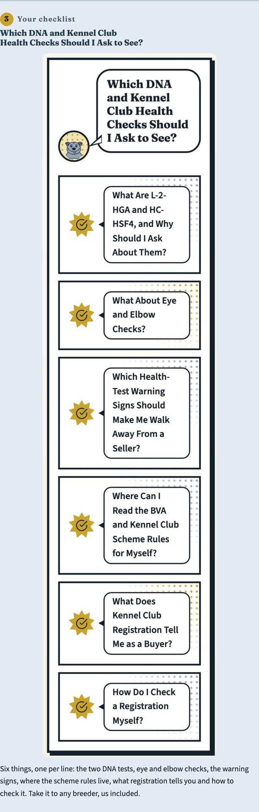</div><figcaption>600 · N360 · 1,677px</figcaption></figure>
    </div>
  </section>

  <!-- ===================== B1 ===================== -->
  <section class="card">
    <span class="tag">B1 · Final audit FAIL · cites_credentials_early</span>
    <h2>No microchip or vet check in the page's first 300 words</h2>
    <p>The check wants "KC registered" or "DEFRA", <i>and</i> "microchipped" or "vet checked", inside the first 300 words of the page body. London has DEFRA at word 208, but "microchipped" first comes at word 521, on the puppy cards. Leaving out the navigation lists still puts it at word 411, so this is a real gap, not a miscount. London is a buying page, so the check fits it.</p>
    <ul class="opts">
      <li class="rec"><b>Add a fifth line to "What Stands Behind Each London Puppy"</b><span class="rec-chip">Recommended</span><br><b>Microchipped before home</b>: With first vaccinations, worming and flea treatment, on a vet-signed health card.<br>Every fact is already yours on file: data/settings.json <code>puppy_trust_signs</code>, and your answer of 2026-10-04 (q07) that every puppy leaves with a vet-signed health card, first vaccinations, a microchip, worming and flea treatment. "Microchipped" is not evidence-ledger vocabulary, so no new proof row is needed. Simulated against the audit: "microchipped" lands at word 220. <span class="pass">PASS.</span><br><b>Why:</b> a London buyer checking us from 300 miles away sees the vet checks before they scroll. <b>Trade-off:</b> five lines leave one alone on the last row of the two-column ledger (see 1280), and the phone ledger grows by 95px. Changing the ledger's lines needs a board re-approval.</li>
      <li><b>Make the check a WARN on city pages</b><br>The for-sale and comparison pages already treat it as a WARN; the city profile only inherits FAIL by default. <b>Trade-off:</b> no city page would ever be held to it.</li>
    </ul>
    <div class="shots">
      <figure><div class="frame">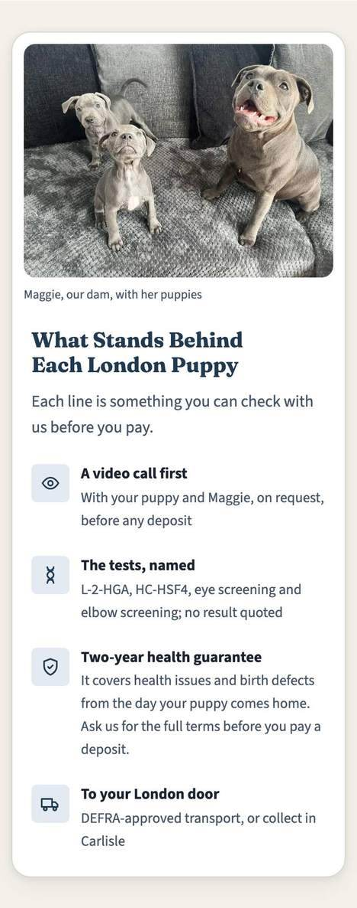</div><figcaption>375 · now</figcaption></figure>
      <figure><div class="frame">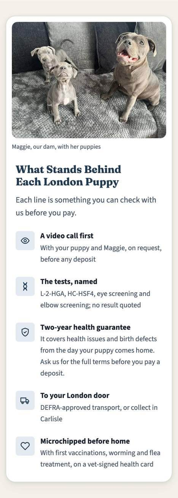</div><figcaption>375 · with the line (+95px)</figcaption></figure>
      <figure><div class="frame">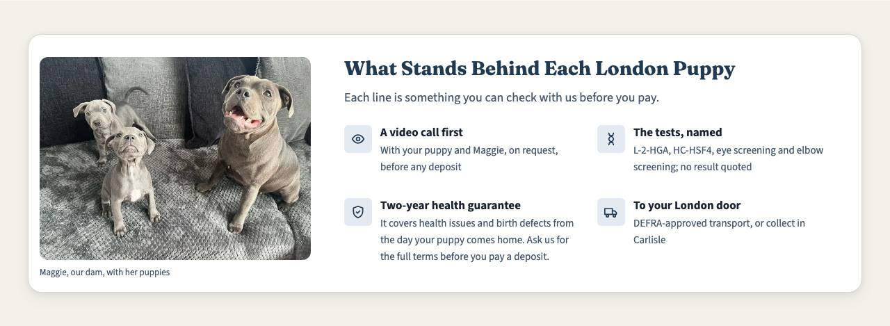</div><figcaption>1280 · now</figcaption></figure>
      <figure><div class="frame">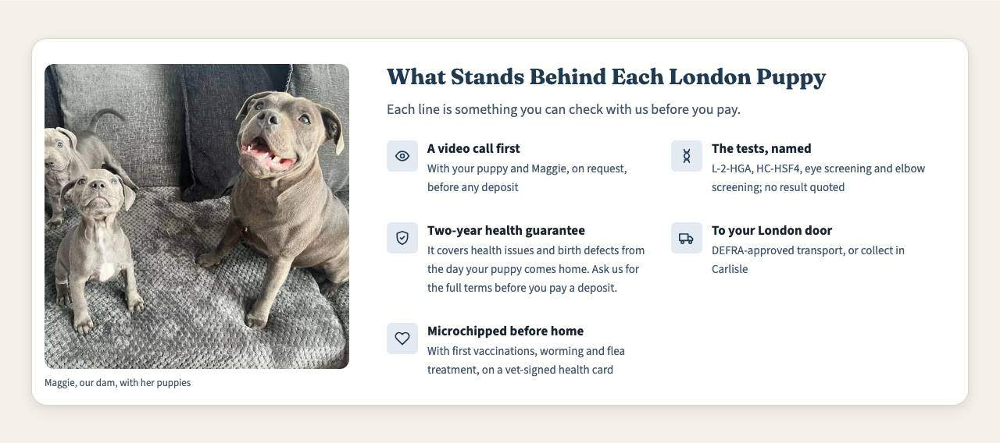</div><figcaption>1280 · with the line</figcaption></figure>
    </div>
  </section>

  <!-- ===================== B2 ===================== -->
  <section class="card">
    <span class="tag">B2 · Final audit FAIL · lifespan_12_14</span>
    <h2>The page never says how long a Staffy lives</h2>
    <p>The check looks for "12–14" or "12 to 14" anywhere in the body, and London has neither. A sourced figure exists: the breed guide's approved board cell, "12 to 14 years with good care and good genetics" (data/boards/uk-staffordshire-bull-terrier-guide.json, cited to the Purina breed library, fetched 2026-09-20). The health page already reads that same cell rather than typing the figure. Neither data/breed-standards.json nor the ontology carries a lifespan.</p>
    <ul class="opts">
      <li class="rec"><b>Add one sentence to the end of the Everyday Health lede, read from the guide's cell</b><span class="rec-chip">Recommended</span><br>"A Staffy lives 12 to 14 years with good care and good genetics." It is built from the cell with <code>breedFactsCell()</code>, as the health page does, never typed. Simulated against the audit: <span class="pass">PASS.</span><br><b>Why:</b> the section is the page's health section, and the board gate already WARNs that it is short (93 prose words against a 117–143 band). This brings it to about 105. <b>Trade-off:</b> it is a third page stating the figure. Your approved outline offered three lifespan FAQ questions for London and picked none, so this adds a fact the outline did not plan.</li>
      <li><b>Make the check a WARN on city pages</b><br>The same reasoning as the about page's existing exemption: the figure belongs to the health page and the guide. <b>Trade-off:</b> the city pages never answer "how long do they live".</li>
    </ul>
    <div class="shots">
      <figure><div class="frame">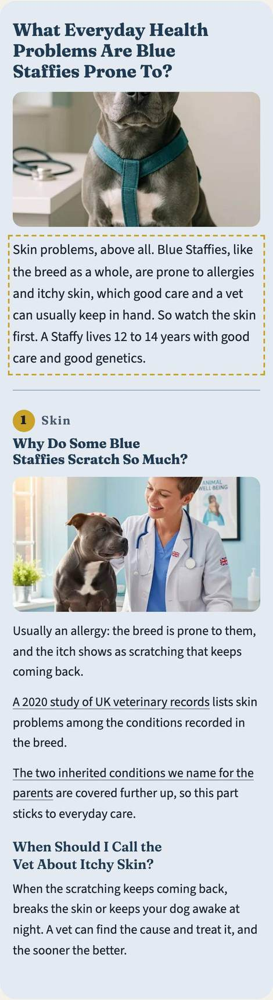</div><figcaption>375 · with the sentence (outlined)</figcaption></figure>
    </div>
  </section>

  <section class="card">
    <span class="tag">How to read the numbers</span>
    <table>
      <thead><tr><th>Answer</th><th>375 (cap 2,030)</th><th>640 (cap 2,250)</th><th>1280 (cap 1,280)</th><th>Recommended fix</th></tr></thead>
      <tbody>
        <tr><td data-label="Answer">Can I watch…</td><td data-label="375">2,064 → 2,012</td><td data-label="640">1,535 → 1,483</td><td data-label="1280">1,288 → 1,262</td><td data-label="Fix">W2</td></tr>
        <tr><td data-label="Answer">How much is each…</td><td data-label="375">1,660 (unchanged)</td><td data-label="640">1,653 → 1,431</td><td data-label="1280">1,872 → 1,260</td><td data-label="Fix">P6</td></tr>
        <tr><td data-label="Answer">Stairs, lifts, flats…</td><td data-label="375">3,753 → 1,001</td><td data-label="640">2,929 → 742</td><td data-label="1280">2,570 → 786</td><td data-label="Fix">S1</td></tr>
        <tr><td data-label="Answer">Staffy or AmStaff…</td><td data-label="375">2,252 → 1,992</td><td data-label="640">695 (unchanged)</td><td data-label="1280">778 (unchanged)</td><td data-label="Fix">M1</td></tr>
      </tbody>
    </table>
    <p class="who">Previews: CSS and HTML injected into a copy of dist/ served locally; nothing here is in src/. Measured with every image loaded, at 375×812, 640×900 and 1280×800 (the test suite's sizes).</p>
  </section>
</main>
